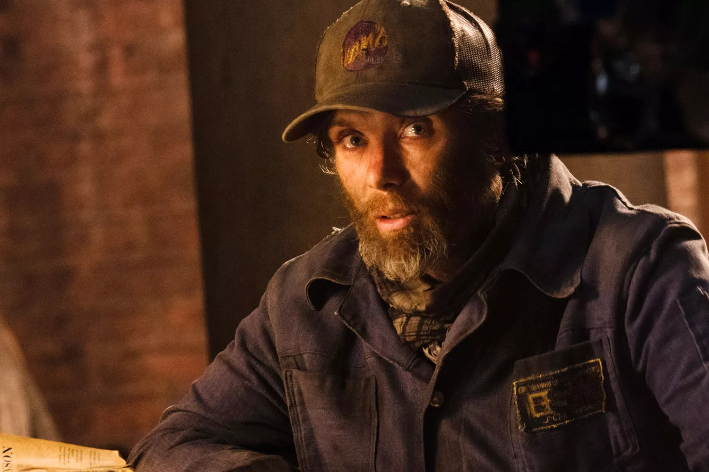
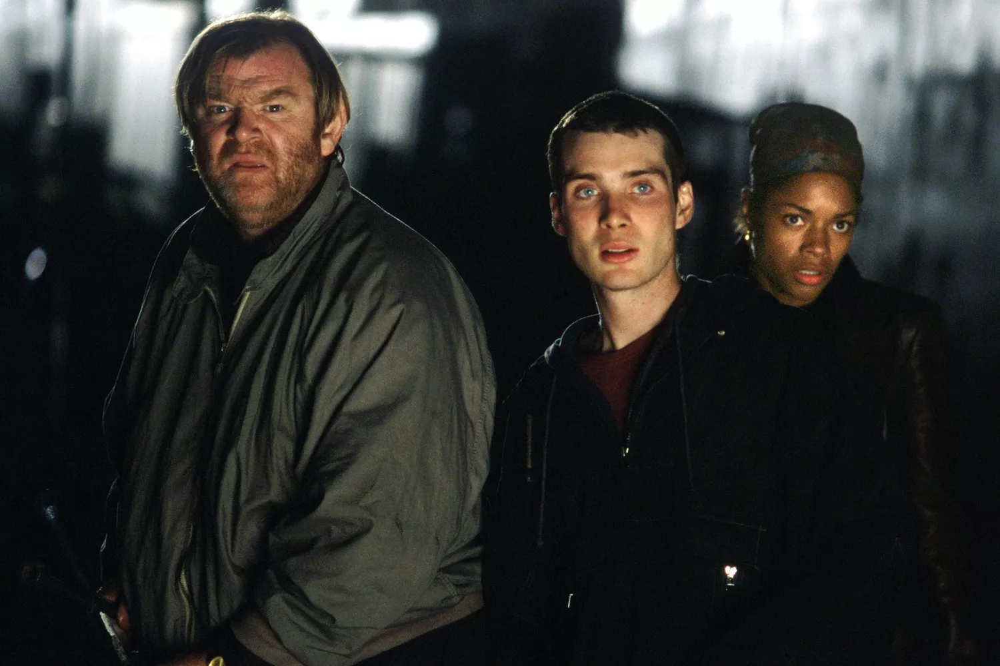
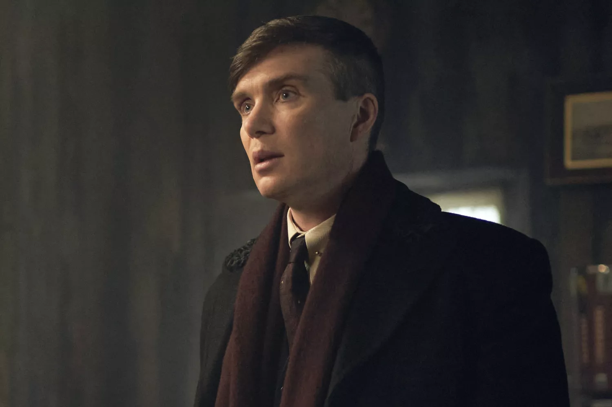
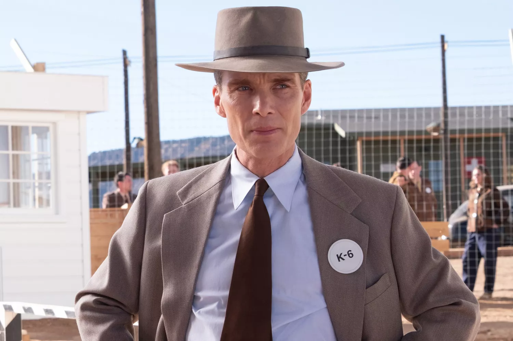
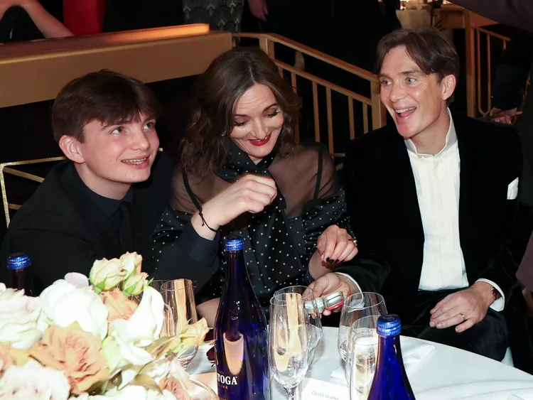
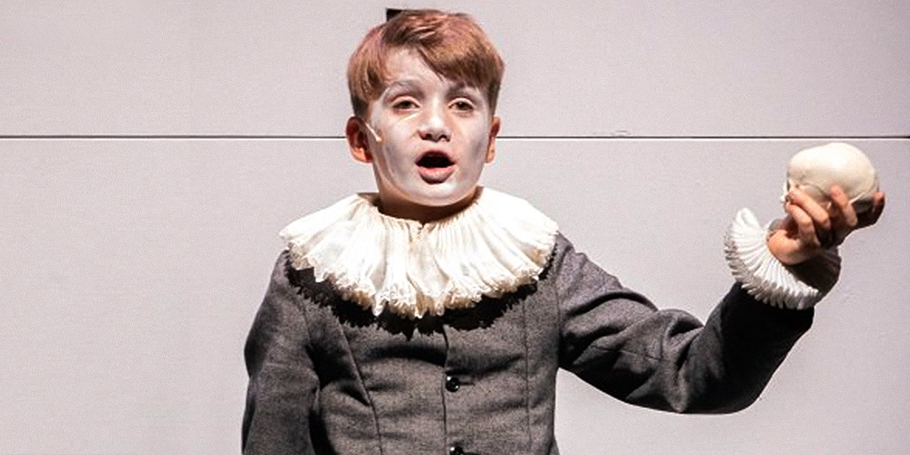
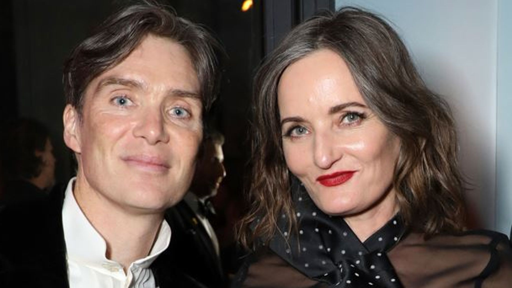
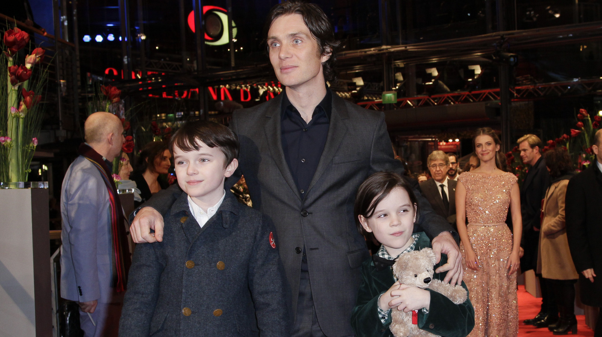

Personal Imformation
| Height | 5'9" |  |
|---|---|---|
| Date of Birth | May 25, 1976 | |
| Gender | Male | |
| Nationality | Irish | |
| Career | Actor | |
| Martial Status | Marriage |
Early life, education, and music
Murphy was born in Douglas and raised in Ballintemple, two suburbs of Cork. His father, Brendan, works for the Irish Department of Education, and his mother is a French teacher. Not only are his parents educators, but his aunts and uncles are also teachers, as was his grandfather. Musicianship also runs in the family and Murphy started playing music and writing songs at age ten. Murphy was raised Roman Catholic and attended the Catholic school Presentation Brothers College, where he did well academically but got into trouble often, sometimes getting suspended, until he decided in his fourth year that misbehaving was not worth the hassle. Not keen on sport, a major part of life at PBC, Murphy found that creative pursuits were not fully nurtured at the school. Still, it was there that he got his first taste of performing, when he participated in a drama module presented by Pat Kiernan, the director of the Corcadorca Theatre Company. Murphy later described the experience as a “huge high” and a “fully alive” feeling that he set out to chase. His English teacher, the poet and novelist William Wall, encouraged him to pursue acting, but, at this stage, to Murphy, performing meant dreams of becoming a rock star. In his late teens and early twenties, Murphy worked toward a career as a rock musician, playing guitar in several bands alongside his brother Páidi. The Beatles-obsessed pair named their most successful band “The Sons of Mr. Greengenes”, after a 1969 song by another idol, Frank Zappa. Murphy sang and played guitar in the band, which he has said “specialised in wacky lyrics and endless guitar solos”. In 1996, The Sons of Mr. Greengenes were offered a five-album record deal by Acid Jazz Records, but they did not sign the contract. Because Murphy’s brother was still in secondary school, their parents disapproved. Additionally, the contract offered little money and would have ceded the rights to Murphy’s compositions to the record label. Also in 1996, Murphy began studying law at University College Cork (UCC), but he failed his first year exams because, as he put it, he had “no ambitions to do it”. Not only was he busy with his band, but he has admitted that he knew within days after starting at UCC that law was the wrong fit for him. Furthermore, after seeing Corcadorca’s stage production of A Clockwork Orange, directed by Kiernan, acting had begun to pique his interest. His first major role was in the UCC Drama Society’s amateur production of Observe the Sons of Ulster Marching Towards the Somme, also starring Irish American comedian, Des Bishop. Murphy also played the lead in a UCC Drama production of Little Shop of Horrors, which was performed in the Cork Opera House. However, according to Murphy, his primary motivation then was to party and meet women, not to begin an acting career. Nonetheless, he began to transition away from working as a rock musician, about which he later remarked, “I think there’s such a thing as a performance gene. If it’s in your DNA it needs to come out. For me it originally came out through music, then segued into acting and came out through there. I always needed to get up and perform.”
Acting career
Early work
Murphy hounded Pat Kiernan until he got an audition at Corcadorca, and in September 1996, he made his professional acting debut on the stage, originating the part of a volatile Cork teenager in Enda Walsh’s Disco Pigs. He later observed, “I was unbelievably cocky and had nothing to lose, and it suited the part, I suppose.” Originally slated to run for three weeks in Cork, Disco Pigs ended up touring throughout Europe, Canada and Australia for two years, and Murphy left both university and his band. Though he had intended to go back to playing music, he secured representation after his first agent caught a performance of Disco Pigs, and his acting career began to take off.
From 1997 to 2003, Murphy starred in independent films, such as John Carney’s On the Edge, in short films, including the Irish/English language short Filleann an Feall, and in the BBC television miniseries adaptation of The Way We Live Now. In addition to Disco Pigs, he starred in many other plays, including Shakespeare’s Much Ado About Nothing, Neil LaBute’s The Shape of Things, and Chekhov’s The Seagull; Murphy considers this stage work to have been his “training ground.” Murphy also reprised his Disco Pigs role for the 2001 indie film version by Kirsten Sheridan, performing his original song “So New” over the closing credits and singing The Kinks’ “You Really Got Me” in a pub karaoke scene. During this period, he moved from Cork, relocating first to Dublin for a few years then to London in 2001.
Murphy’s onscreen performance in Disco Pigs caught the eye of director Danny Boyle when casting the lead for 28 Days Later. Released in the UK in late 2002, by the following July 28 Days Later had become a sleeper hit in America and a major success worldwide, putting Murphy before a mass audience for the first time. His performance as pandemic survivor Jim earned him nominations for Best Newcomer at the 8th Empire Awards and Breakthrough Male Performance at the 2004 MTV Movie Awards. ComingSoon.net’s review of the film said, “Cillian Murphy is a superb find… and he gives a break-out performance as a man torn apart by the new world into which he’s awakened.
In late 2003, Murphy starred as a lovelorn, hapless supermarket stocker who plots a bank heist with Colin Farrell in Intermission, which became the highest-grossing Irish independent film in Irish box office history (until The Wind That Shakes the Barley broke the record in 2006). Murphy also appeared in supporting roles in his first Hollywood films, Cold Mountain and Girl with a Pearl Earring. For the latter film, he learned to chop meat in an abattoir to prepare for his role as a butcher, even though he is a vegetarian. In 2004, he toured Ireland in the titular role of The Playboy of the Western World, a Druid Theatre Company production under the direction of Garry Hynes, who had previously directed Murphy in Seán O’Casey’s Juno and the Paycock and John Murphy’s The Country Boy, also for Druid.
Critical success
2005 was the year that Cillian Murphy won wider recognition, first for two high-profile villain roles: Dr. Jonathan Crane in Batman Begins, and Jackson Rippner in the thriller Red Eye. Originally asked to audition for the role of Bruce Wayne/Batman in Batman Begins, Murphy never saw himself as having the right physique for the superhero but leapt at the chance to connect with director Christopher Nolan. Though the lead went to Christian Bale, Nolan was so impressed with Murphy that he gave him the supporting role of Dr. Crane, whose alter ego is supervillain Scarecrow. Nolan told Spin, “He has the most extraordinary eyes, and I kept trying to invent excuses for him to take his glasses off in close-ups.” In Wes Craven’s Red Eye, Murphy starred as an operative in an assassination plot who terrorises Rachel McAdams on an overnight flight. New York Times film critic Manohla Dargis asserted that Murphy made “a picture-perfect villain” and that his “baby blues look cold enough to freeze water and his wolfish leer suggests its own terrors.”
Murphy received several awards nominations for his 2005 bad guy turns, among them a nomination as Best Villain at the 2006 MTV Movie Awards for Batman Begins. Entertainment Weekly ranked him among its 2005 “Summer MVPs”, a cover story list of ten entertainers with outstanding breakthrough performances. The New Yorker’s David Denby wrote, “Cillian Murphy, who has angelic looks that can turn sinister, is one of the most elegantly seductive monsters in recent movies.”
In late 2005 (early 2006 in Europe), Murphy starred as Patrick/”Kitten” Braden, a transgender Irish foundling in search of her mother, in Neil Jordan’s dramedy Breakfast on Pluto, based on the novel of the same title by Patrick McCabe. Murphy had auditioned for the role in 2001, and though Jordan liked him for the part, The Crying Game director was hesitant to revisit transgender and I.R.A. issues. For several years, Murphy lobbied Jordan to make the film before the actor became too old to play the part. In 2004, Murphy prepared for the role by meeting with a transvestite who dressed him and took him clubbing with other transvestites. Taking notice of the group’s quick wit, Murphy attributed it to their constantly having to respond to insults from prejudiced people around them.
Against Breakfast on Pluto’s kaleidoscopic backdrop of 1970s glitter rock fashion, magic shows, red light districts and I.R.A. violence, Murphy transforms from androgynous teen to high drag blond bombshell. The San Francisco Chronicle’s Ruthe Stein said of his performance, “Murphy projects enormous energy onscreen, as he’s already shown in 28 Days Later and Red Eye. He’s supremely well cast as the androgynous Kitten … [and] smoothly makes the transition from broad comedy to drama. He delivers Kitten’s favourite line, ‘Oh serious, serious, serious!’ with the full implications of its dual meaning.” While even lukewarm reviews of Breakfast on Pluto still tended to praise Murphy’s performance highly, a few critics dissented: The Village Voice, which panned the film, found him “unconvincing” and overly cute.
Murphy was nominated for a Golden Globe Award for Best Actor in a Musical or Comedy for Breakfast on Pluto and won the Irish Film and Television Academy Best Actor Award. Premiere cited his performance as Kitten in their “The 24 Finest Performances of 2005” feature. All three of his 2005 performances were honoured by Entertainment Weekly, when they included him in their “Great Performances of 2005” year-end issue. A late 2005 Back Stage feature labelled Murphy “a chameleonic performer, a character actor trapped in a leading man’s bone structure.”
In 2006 (2007 in North America), he starred in Ken Loach’s film about the Irish War of Independence and Civil War, The Wind That Shakes the Barley, which won the Palme d’Or at the 2006 Cannes Film Festival and became the most successful Irish independent film at the Irish box office. Loach, a social realist who shoots films in sequence, is strict about casting actors from the areas where his films are set, rarely casting well-known faces. Because the film was set in Cork, Murphy was given a chance at the role of Damien O’Donovan, a young doctor turned revolutionary, but he had to audition six times before winning the part. Murphy’s family goes back in Cork for many generations; during the time period in which The Wind That Shakes the Barley is set, his grandfather was shot at by British soldiers for playing Irish music.
In 2009, Cillian starred in The Water, directed by rock musician Kevin Drew of Broken Social Scene, and starring Murphy, rock musician Feist and actor David Fox, which was released online in April. The 15-minute Canadian short film is nearly silent until the Feist song of the same title plays close to the end. Murphy also starred in Perrier’s Bounty, a crime dramedy from the makers of Intermission, in which he portrayed a petty criminal on the run from a gangster played by Brendan Gleeson. Perrier’s Bounty premiered at the 2009 Toronto International Film Festival in September 2009 and had a limited release in 2010. In Peacock, a psychological thriller, Murphy starred as a man with a split personality who fools people into believing he is also his own wife, alongside Ellen Page. In late 2011 Murphy expressed a keen interest in working with Christopher Nolan on a more frequent basis, reportedly sending various audition tapes, soundbites and resumés to the directors London Home. Peacock was released straight to DVD in early 2010. The several years’ delayed biopic Hippie Hippie Shake shot in 2007, stars Murphy (again alongside Sienna Miller) as Richard Neville, editor of the psychedelic radical underground magazine Oz, which, in 1971, was at the centre of what was then the longest obscenity trial in British history. In a sign of trouble, the director and screenwriter walked off the production in mid-2009. In contrast to his delayed projects, Murphy was a part of the acclaimed ensemble cast of Christopher Nolan’s blockbuster Inception, with Leonardo DiCaprio, Ellen Page and Joseph Gordon-Levitt; the film was released in July 2010. He also made an uncredited cameo appearance in Tron: Legacy, released in December 2010, as programmer Edward Dillinger Jr, son of original Tron antagonist Ed Dillinger (David Warner). In 2012, Murphy reprised his role as the Scarecrow for the third and final time in The Dark Knight Rises.
As for future roles, Murphy has long wanted to portray a cowboy in a Western, because as a child, he enjoyed watching John Wayne movies with his father. In 2005, he commented that he would like to play the jazz musician Chet Baker. Murphy would like to work with director Michel Gondry someday; among the actors he hopes to work with are Johnny Depp, Meryl Streep, and Philip Seymour Hoffman. He also admires Jeff Bridges, Sean Penn, Edward Norton, and Joaquin Phoenix. Not wishing to be typecast or repeat himself, Murphy commented in 2006 that he did not want to play any more villains. Although he does not want to move to Los Angeles because of the cultural differences and distance from his family, Murphy has said he feels it is both wise and artistically worthwhile for him to make both big Hollywood pictures and smaller independent films.
Cillian Murphy's Top 4 Movies And Shows
| 
A Quiet Place Part II (2020) |

28 Days Later (2002) |

Peaky Blinders (2013–2022) |

Oppenheimer (2023) |
Personal Life
In mid-2004, Murphy married his long-time live-in girlfriend, Yvonne McGuinness, an artist whom he met in 1996 at one of his rock band’s shows. The couple live in North West London with their two sons, Malachy (born in 2005) and Carrick (born in 2007). Murphy is known for being reluctant to speak about his personal life. He frequently gives interviews about his work but did not appear on any live TV chat shows until 2010, when he was a guest on The Late Late Show on Ireland’s RTÉ to promote Perrier’s Bounty yet remained politely reserved. He does not have a stylist or a personal publicist, travels without an entourage, and often attends premieres alone. Shy and private, Murphy professes a lack of interest in the celebrity scene, finding the red-carpet experience “a challenge and not one I want to overcome”. He intentionally practices a lifestyle that will not interest the tabloids: “I haven’t created any controversy, I don’t sleep around, I don’t go and fall down drunk”. Murphy is friends with fellow Irish actors Colin Farrell and Liam Neeson, looking up to the latter like a “surrogate movie dad.” But primarily, Murphy’s close friendships are those he made before becoming a star.Music is still an important part of Murphy’s life. In 2004, he said, “The only extravagant thing about my lifestyle is my stereo system, buying music and going to gigs”. He no longer plays in a rock band, but regularly plays music with friends and on his own, and still writes songs. Murphy does not plan to start another band: “Even if I was good, the very notion of being an actor with a rock band on the side would mean I’d never be taken seriously”. Murphy is also a dedicated runner.Murphy, previously an agnostic, became an atheist after researching his role as a nuclear physicist/astronaut in the science fiction film Sunshine. He is a long-time vegetarian, not due to any moral objection to the killing of animals, but because of qualms about unhealthy agribusiness practices. Murphy participated in the 2007 Rock the Vote Ireland campaign targeting young voters for the general election. He has also campaigned for the rights of the homeless with the organisation Focus Ireland. In February 2012, Murphy wrote a message of support to the former Vita Cortex workers involved in a sit-in at their plant, congratulating them for “highlighting [what] is hugely important to us all as a nation”.
Cillian Murphy's Wife and Kids
| 
Happy Family Type |

Aran Murphy (Son) |

Yvonne McGuinness (Wife) |

Cillian Murphy and his sons |